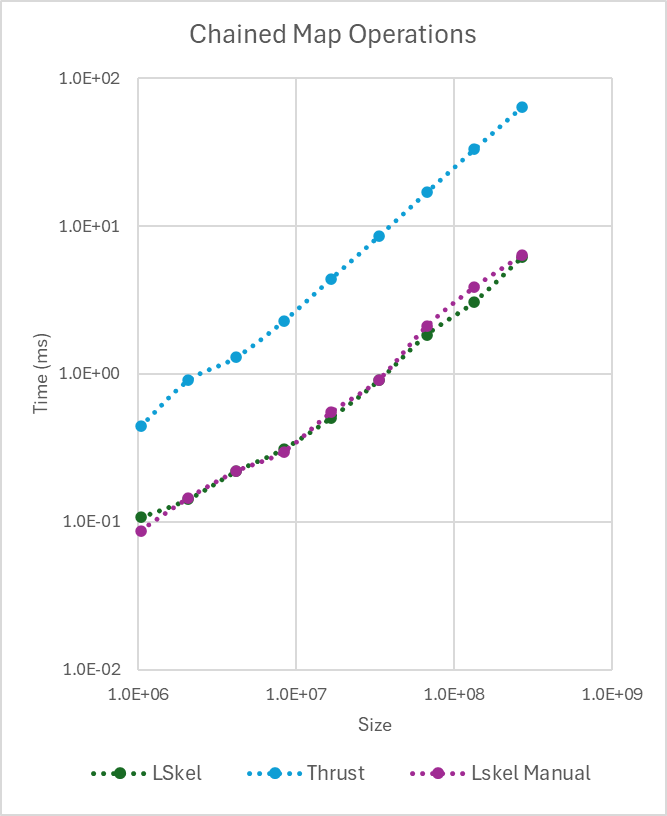
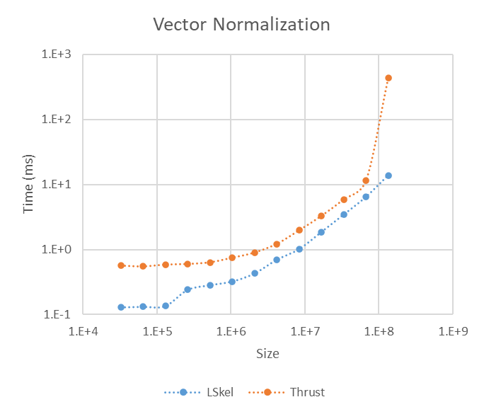
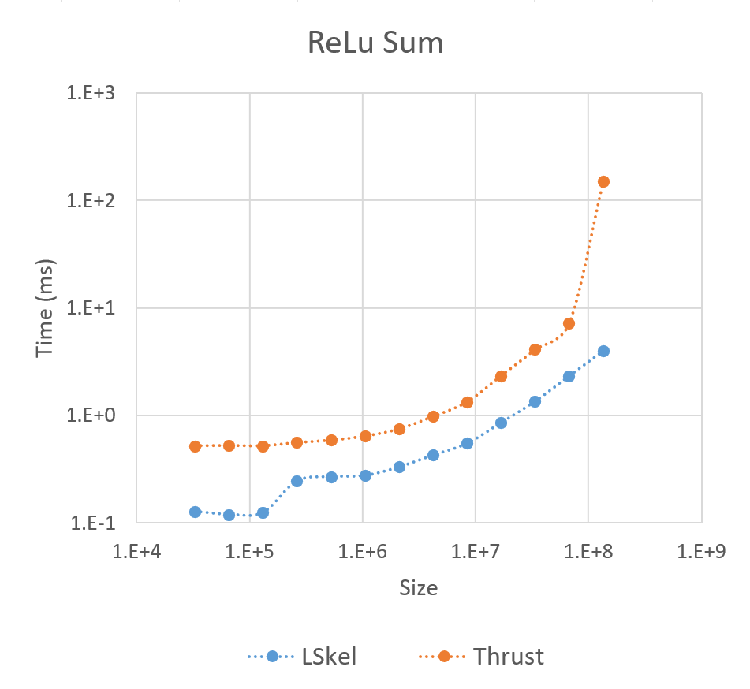

This section evaluates the performance of the Lazy Skeletons framework on common, multi-stage computational tasks, comparing it directly against NVIDIA's highly optimized Thrust library. We use Vector Normalization and ReLU Sum as benchmarks to demonstrate the effectiveness of our framework's kernel fusion capabilities in high-performance computing.
The SAXPY (Single-Precision A * X Plus Y) algorithm is a simple illustration of the API's simplicity and power. Note the clean, chainable syntax. The computation is fused into a single kernel and executed only at the assignment to the result variable z.
struct saxpy_functor {
const float a;
__device__ float operator()(float x, float y) const {
return a * x + y;
}
};
struct reduce_functor {
__device__ float operator()(float x, float y) const {
return x + y;
}
}int main() {
float a = 2.0f;
int n = 1 << 20; // ~1 million elements
lskel::Vector<float> x(n, 1.0f); // Vector of 1s
lskel::Vector<float> y(n, 2.0f); // Vector of 2s
float z;
// Computation is fused and triggered on this line
z = y.map(x, saxpy_functor(a)).reduce(reduce_functor(), 0.0f);
// z now contains the result (2.0 * 1.0 + 2.0) * n = 4 million
return 0;
}One of the defining strengths of our framework is its ability to combine multiple Map operations into a single kernel launch. This is achieved through expression templates, which enable lazy evaluation and symbolic composition, significantly reducing overhead and improving performance.
To evaluate this, we benchmarked ten chained Map operations against an equivalent implementation in Thrust. Our framework fuses all ten operations into a single kernel, while Thrust requires ten separate kernel launches. The performance difference is clear in the figure below.
Chained Map Benchmark (10 Computations)
The Thrust implementation's execution time increases substantially with vector size due to repeated kernel launch latency. In contrast, our fused kernel maintains near-constant overhead. This highlights how kernel fusion dramatically reduces launch overhead and avoids unnecessary intermediate memory operations, demonstrating the effectiveness of our optimization strategy.
Vector normalization scales a vector to a magnitude (L₂ norm) of 1. The operation involves an expensive, multi-stage process where each element $v_i$ is divided by the vector's magnitude $\lVert \mathbf{v} \rVert = \sqrt{\sum v_i^2}$.
A standard implementation requires separate kernels for squaring, summing (reduction), taking the square root, and final division. Our framework optimizes this by automatically fusing the steps, converting the sequence into a more efficient Map-Reduce followed by a Map operation.
Performance comparison between our framework (lskel) and a multi-step Thrust implementation for Vector Normalization.
The ReLU Sum is a classic Map-Reduce pattern used widely in neural networks, where the Rectified Linear Unit function (max(0, x)) is applied element-wise, followed by a sum reduction. This benchmark highlights the efficiency of our direct Map-Reduce fusion compared to a standard implementation that requires two separate kernel launches (one for Map, one for Reduce).
Performance comparison of the ReLU Sum operation between our framework and a standard Thrust implementation.
The benchmark results validate the framework's fusion architecture:
These findings confirm that the framework's high-level API successfully abstracts complexity while generating highly efficient, fused kernels competitive with industry-standard libraries.